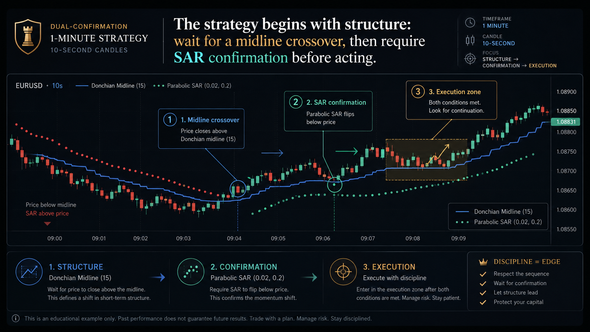
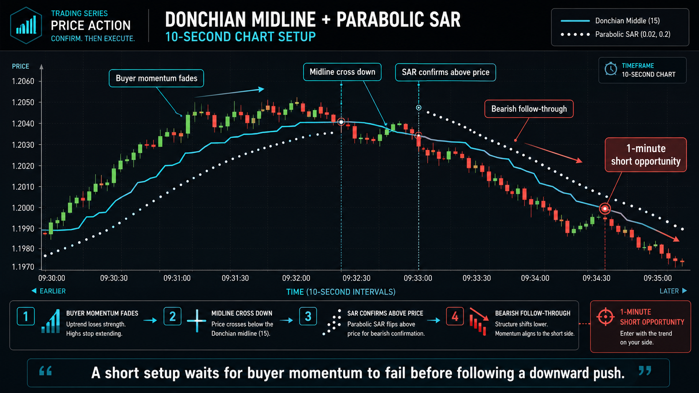

Read the micro-range
The 15-period Donchian middle line acts as the balance point between recent highs and lows. A clean cross can suggest that short-term pressure is shifting.
A professional learning guide to filtering short-term market noise with a 15-period Donchian middle line and custom Parabolic SAR confirmation before considering a 1-minute trade setup.

The central idea is disciplined delay. On a fast chart, random candles can look convincing for a few seconds and then disappear. This method turns patience into a rule: first observe the Donchian middle line, then confirm the direction with Parabolic SAR.
The 15-period Donchian middle line acts as the balance point between recent highs and lows. A clean cross can suggest that short-term pressure is shifting.
Parabolic SAR is not the first reason to trade. It is the second checkpoint that helps separate real momentum from a brief breakout illusion.
A 1-minute expiration contains six 10-second candles, giving enough detail to inspect entry quality without relying on a delayed 1-minute chart signal.

A Donchian midline crossover gives the first clue that price may be leaving one side of the recent range and moving into a new pressure zone. Parabolic SAR then asks whether that movement is stable enough to be treated as momentum.
The method is built around a fast 10-second environment. Default indicator behavior can be too sensitive, so the book emphasizes slower, more selective SAR settings and a focused Donchian middle line.
| Component | Recommended setup | Purpose |
|---|---|---|
| Chart type | Classic candlesticks on a 10-second timeframe | Shows raw open, high, low, and close behavior so the trader can judge wick rejection, weak closes, and momentum quality. |
| Donchian Channels | Period 15, upper and lower bands disabled, middle line visible | Reduces chart clutter and focuses attention on the balance point of the recent micro-range. |
| Parabolic SAR | Acceleration step 0.0015, maximum acceleration 0.15 | Makes SAR more selective on a 10-second chart, helping it confirm stronger momentum rather than every tiny fluctuation. |
| Expiration | 1 minute | Aligns the trade window with six 10-second candles, so entry timing can be evaluated in micro-structure detail. |
The safest way to study a short-duration strategy is to practice the sequence without real-money pressure. Use the demo space to observe signals, record examples, and build discipline before making any financial decision.
A long setup begins when price moves from below the 15-period Donchian middle line to above it with a clean bullish candle. The setup becomes stronger when Parabolic SAR dots appear below the candles at nearly the same time.
Wait for a decisive bottom-to-top cross of the Donchian middle line.
Confirm that SAR dots are below the candles, suggesting upward pressure is becoming organized.
Only consider execution when both signals appear close together and the candle behavior is smooth.

A short setup forms when price fails to make new highs, then moves from above the Donchian middle line to below it. SAR confirmation appears when dots print above the candles, showing that downward pressure is becoming more organized.
The checklist below converts the strategy into a practical pre-flight routine. It is intentionally strict because short-duration trading punishes impulsive decisions.
The book explains that increasing the SAR step to a common 0.02 can make the indicator flip too frequently on 10-second candles. A very short Donchian period can also create repeated low-quality crossovers. The goal is not to generate more signals; the goal is to filter for cleaner ones.
A faster SAR may validate weak moves before the Donchian crossover has meaningful follow-through.
A 5-period Donchian middle line can become nervous, turning normal candle vibration into frequent signals.
Using the exact rules on longer charts can delay confirmation until the 1-minute opportunity has already passed.
The full book expands the method across general philosophy, indicator calibration, long and short blueprints, consolidation breakouts, and the psychological value of waiting for strict dual confirmation.
No. No indicator combination can guarantee a profitable result. Dual confirmation is a decision framework designed to reduce impulsive entries and improve consistency.
Classic candlesticks show raw price behavior, including wicks and weak closes. This matters when timing a 1-minute setup from 10-second chart data.
The rules are designed for micro-momentum. Longer charts can make confirmation appear too late for a 1-minute expiration.
Practice in a demo environment before making any real-money decision. A demo account lets you record examples, measure behavior, and build discipline without immediate financial pressure.
This page is educational material only and is not financial advice. Binary options and short-duration trading involve substantial risk. Practice in a demo environment, keep records, and never risk money you cannot afford to lose.